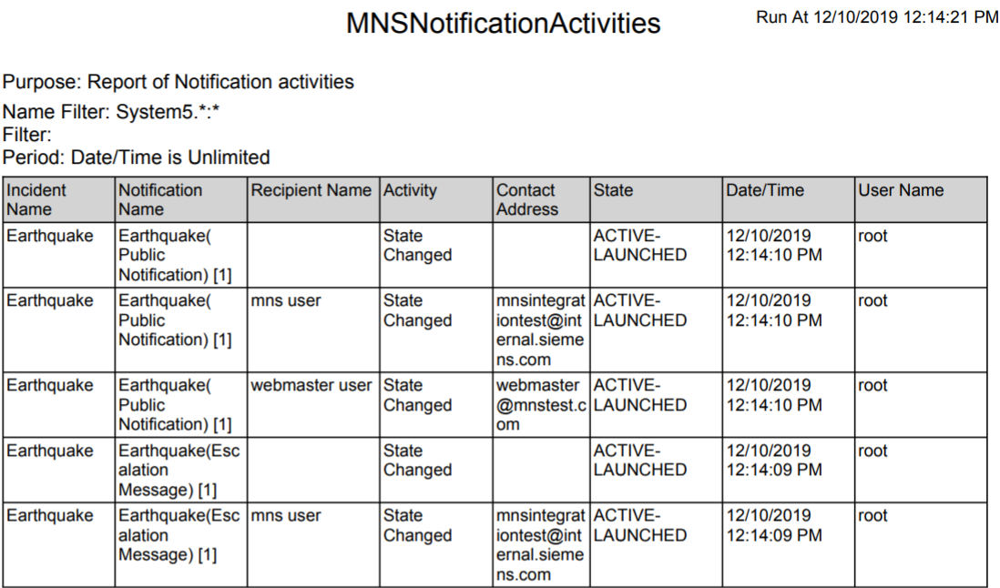
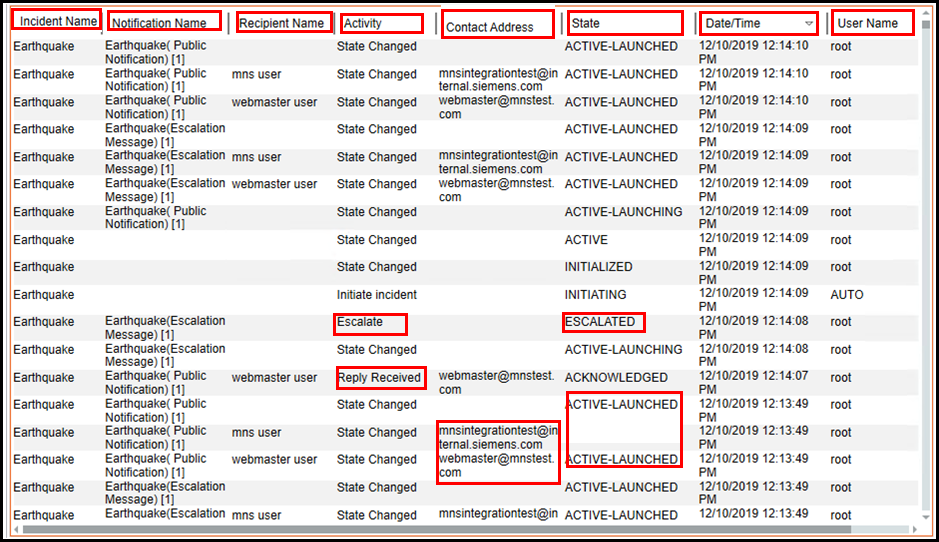

Notification Reports
Notification supports the following report types:
- Notification System Activities
- Incident Activities
- Notification Activities
- Recipient Activities
To work with these reports you must first import the report templates. (see Import a Report Definition in Additional Report Procedures > Managing Report Definitions and Folders)

Example of Notification Report
Let us suppose that there is an earthquake in a city. The operator launches the message template named Earthquake(Public Notification) with escalation settings configured to two recipient users through email. The message is delivered to both the recipient users. The operator wants replies from both the recipient users but only one recipient user replies. Based on the escalation rule configured, Notification launches the target message Template named Earthquake(Escalation Message).

Below are the required columns and the associated text for the above example which can be viewed by the operator:
- Incident Name: Name of the incident (Earthquake).
- Notification Name: Name of the message templates (Earthquake(Public Notification)) and (Earthquake(Escalation Message)).
- Recipient Name: Name of the recipient user device (Email users).
- Activity: The activity performed on the corresponding message template (Reply Received and Escalate).
- Contact Address: The recipient's address (abc@xyz.com).
- State: The state of the message template (
AcknowledgedandEscalated) - Date/Time: The date and time of the action performed as per the details mentioned in each row (for example, the reply from the recipient user was received on 2/11/2015 at 10:37:44 PM and the target message template (Earthquake(Escalation Message)) was escalated on 2/11/2015 at 10:37:44 PM.
- User Name: The name of the user who performs the action detailed in a row (root).
You can also view the report as a pdf as shown below.